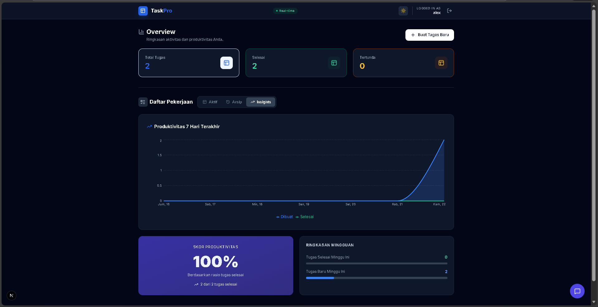
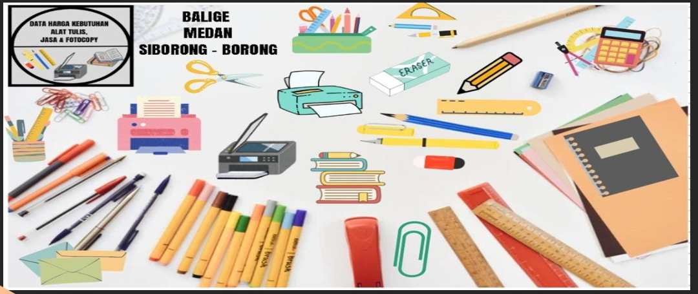
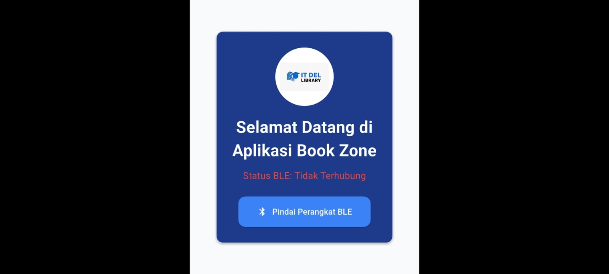
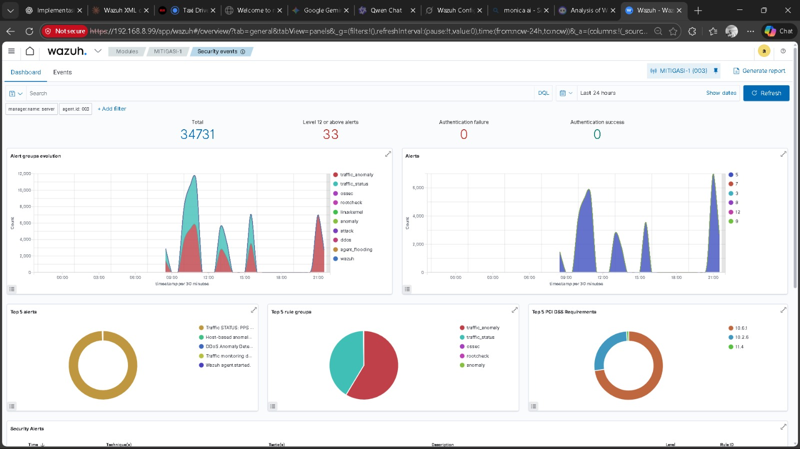

Computer Technology Student @ IT Del | Full Stack & AI Engineer | Network Security
As a final-year Computer Technology student at Institut Teknologi Del, I specialize in building secure and scalable digital ecosystems. My foundation lies in DevOps Engineering and Cybersecurity, where I have successfully orchestrated deployments using Docker, Kubernetes, and Ansible, while implementing threat detection systems using Wazuh SIEM.
Expanding my technical horizon, I am actively developing as a Full Stack & AI Engineer. I build enterprise-ready applications utilizing Next.js and Python FastAPI, integrated with Google Gemini AI to create intelligent, context-aware solutions. I combine this software expertise with my hardware roots in IoT (ESP32 & Node-RED), allowing me to engineer comprehensive solutions from the hardware layer up to the intelligent cloud interface.
D3 Teknologi Komputer
Institut Teknologi Del
(2023 - Present)
Full Stack & AI, DevOps Engineering, Cloud Infrastructure, IoT Systems
BEM IT Del - Arts & Culture Department (Active Member)
Docker, Kubernetes, Ansible, OpenTofu, Linux Admin
Wazuh SIEM, Penetration Testing, Network Security
ESP32, Raspberry Pi, Arduino, Node-RED, Mosquitto
Flutter, Android Studio, Kotlin, Java
Next.js, FastAPI (Python), PostgreSQL, Google Gemini AI, WebSockets
Git, Postman, Grafana, InfluxDB, VS Code

Enterprise-ready productivity platform featuring Real-time Kanban (WebSockets) and a context-aware AI Assistant (Google Gemini). Built with Next.js, Python FastAPI, and PostgreSQL to visualize productivity insights.
Lihat Kode
Managed the end-to-end development of a responsive web catalog. Designed a clean, user-friendly UI/UX and coordinated team workflows to ensure timely delivery.
Lihat Kode
Built an IoT scanning system using ESP32 to detect BLE signals. Integrated hardware with a mobile application UI to visualize real-time book locations.
Lihat Kode
Developed an anomaly-based detection system with automated route nullification. Implemented real-time alert monitoring to mitigate security threats effectively.
Lihat Kode"Technology is best when it brings people together."
Ivan Simanjuntak
@guunnn____
IvanGunawanSimanjuntak
+62 812-6209-9033
ivang7351@gmail.com
Tertarik berkolaborasi atau ingin melihat detail pengalaman saya?
unduh CV disini !